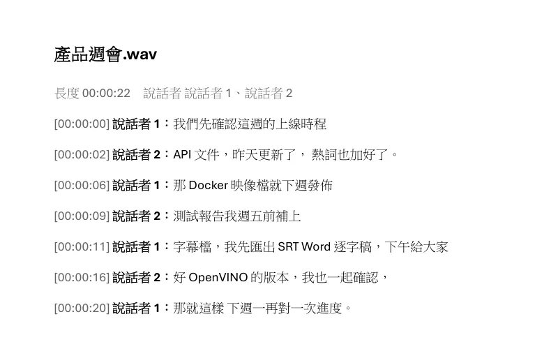

分辨說話者，記住聲音
自動判斷或指定人數；取名後存進語者庫，之後自動認出。分錯時可以合併或改給別人。
怎麼分出誰在說話示意
- 分段找出每一小段時間有人在說話
- 聲紋分群比對每段的聲紋，像的歸成同一群
- 排回時間軸依第一次開口的順序編成說話者 1、2
- 認人和語者庫裡記過的聲音夠像，就換成名字
發布開源，MIT 授權
用 MediaTek Research 的 Breeze ASR 25 / 26 辨識臺灣華語、中英夾雜與臺灣台語，自動加標點、分辨說話者；在波形時間軸上校對，再匯出字幕檔或 Word 逐字稿。錄音不必上傳到任何雲端服務。
按上下方向鍵切換字幕段落，Home 與 End 跳到第一段或最後一段。
01:01介紹影片
01流程
01
上傳 m4a、mp3、wav、mp4 等常見格式，可以一次選多個排隊；也能拖進視窗、用瀏覽器錄音，或放進監看資料夾。
02
Breeze ASR 25 辨識臺灣華語與中英夾雜，Breeze ASR 26 辨識臺灣台語、輸出華語漢字。可以加熱詞、自動標點、分辨說話者。
03
在波形時間軸上直接改字、對時、分割合併、尋找取代；改錯了，按復原。
04
匯出 SRT、VTT、ASS、TXT、Markdown、DOCX、JSON，或把字幕燒錄到原始影片。
02功能
自動判斷或指定人數；取名後存進語者庫，之後自動認出。分錯時可以合併或改給別人。
怎麼分出誰在說話示意
每一步都能復原與重做；尋找取代可以一次套用詞彙表的取代規則。
辨識照樣在這台電腦上跑，手機與平板用瀏覽器上傳、播放、校對與匯出；要錄音時用 HTTPS 連線。
用獨立的標點模型補上全形標點。
新的錄音或影片自動送出辨識，結果寫在原檔旁邊，也會出現在網頁的工作清單。
04實測
22 秒的兩人週會錄音，用 ListenMiao 0.7.6 在 Core Ultra 7 155U 的內顯（int8）實際辨識兩次：一次不給熱詞，一次給熱詞。標出來的字是兩次結果不同的地方。
跟錄音賽跑示意
處理時間是實測值；進度條只示意快慢，不是即時處理。
熱詞
會中提到 Docker 映像檔、SRT 字幕檔、Word 逐字稿與 OpenVINO。
05匯出
上一段「給熱詞」那次結果直接匯出的檔案，一字未改。
1
00:00:00,000 --> 00:00:02,600
說話者 1：我們先確認這週的上線時程
2
00:00:02,600 --> 00:00:04,760
說話者 2：API 文件，昨天更新了，
3
00:00:04,760 --> 00:00:06,480
說話者 2：熱詞也加好了。
4
00:00:06,480 --> 00:00:09,320
說話者 1：那 Docker 映像檔就下週發佈
5
00:00:09,320 --> 00:00:11,760
說話者 2：測試報告我週五前補上
6
00:00:11,760 --> 00:00:16,400
說話者 1：字幕檔，我先匯出 SRT Word 逐字稿，下午給大家
7
00:00:16,400 --> 00:00:20,000
說話者 2：好 OpenVINO 的版本，我也一起確認，
8
00:00:20,000 --> 00:00:22,000
說話者 1：那就這樣 下週一再對一次進度。WEBVTT
00:00:00.000 --> 00:00:02.600
<v 說話者 1>我們先確認這週的上線時程
00:00:02.600 --> 00:00:04.760
<v 說話者 2>API 文件，昨天更新了，
00:00:04.760 --> 00:00:06.480
<v 說話者 2>熱詞也加好了。
00:00:06.480 --> 00:00:09.320
<v 說話者 1>那 Docker 映像檔就下週發佈
00:00:09.320 --> 00:00:11.760
<v 說話者 2>測試報告我週五前補上
00:00:11.760 --> 00:00:16.400
<v 說話者 1>字幕檔，我先匯出 SRT Word 逐字稿，下午給大家
00:00:16.400 --> 00:00:20.000
<v 說話者 2>好 OpenVINO 的版本，我也一起確認，
00:00:20.000 --> 00:00:22.000
<v 說話者 1>那就這樣 下週一再對一次進度。[Script Info]
Title: 產品週會.wav
ScriptType: v4.00+
PlayResX: 1920
PlayResY: 1080
WrapStyle: 0
ScaledBorderAndShadow: yes
[V4+ Styles]
Format: Name, Fontname, Fontsize, PrimaryColour, SecondaryColour, OutlineColour, BackColour, Bold, Italic, Underline, StrikeOut, ScaleX, ScaleY, Spacing, Angle, BorderStyle, Outline, Shadow, Alignment, MarginL, MarginR, MarginV, Encoding
Style: Default,Microsoft JhengHei,64,&H00FFFFFF,&H000000FF,&H00000000,&H80000000,0,0,0,0,100,100,0,0,1,3,1,2,80,80,60,1
[Events]
Format: Layer, Start, End, Style, Name, MarginL, MarginR, MarginV, Effect, Text
Dialogue: 0,0:00:00.00,0:00:02.60,Default,說話者 1,0,0,0,,說話者 1：我們先確認這週的上線時程
Dialogue: 0,0:00:02.60,0:00:04.76,Default,說話者 2,0,0,0,,說話者 2：API 文件，昨天更新了，
Dialogue: 0,0:00:04.76,0:00:06.48,Default,說話者 2,0,0,0,,說話者 2：熱詞也加好了。
Dialogue: 0,0:00:06.48,0:00:09.32,Default,說話者 1,0,0,0,,說話者 1：那 Docker 映像檔就下週發佈
Dialogue: 0,0:00:09.32,0:00:11.76,Default,說話者 2,0,0,0,,說話者 2：測試報告我週五前補上
Dialogue: 0,0:00:11.76,0:00:16.40,Default,說話者 1,0,0,0,,說話者 1：字幕檔，我先匯出 SRT Word 逐字稿，下午給大家
Dialogue: 0,0:00:16.40,0:00:20.00,Default,說話者 2,0,0,0,,說話者 2：好 OpenVINO 的版本，我也一起確認，
Dialogue: 0,0:00:20.00,0:00:22.00,Default,說話者 1,0,0,0,,說話者 1：那就這樣 下週一再對一次進度。說話者 1：我們先確認這週的上線時程
說話者 2：API 文件，昨天更新了，
熱詞也加好了。
說話者 1：那 Docker 映像檔就下週發佈
說話者 2：測試報告我週五前補上
說話者 1：字幕檔，我先匯出 SRT Word 逐字稿，下午給大家
說話者 2：好 OpenVINO 的版本，我也一起確認，
說話者 1：那就這樣 下週一再對一次進度。# 產品週會.wav
- 長度：00:00:22
- 說話者：說話者 1（00:00:11）、說話者 2（00:00:07）
[00:00:00] **說話者 1**：我們先確認這週的上線時程
[00:00:02] **說話者 2**：API 文件，昨天更新了， 熱詞也加好了。
[00:00:06] **說話者 1**：那 Docker 映像檔就下週發佈
[00:00:09] **說話者 2**：測試報告我週五前補上
[00:00:11] **說話者 1**：字幕檔，我先匯出 SRT Word 逐字稿，下午給大家
[00:00:16] **說話者 2**：好 OpenVINO 的版本，我也一起確認，
[00:00:20] **說話者 1**：那就這樣 下週一再對一次進度。{
"text": "我們先確認這週的上線時程\nAPI 文件，昨天更新了，\n熱詞也加好了。\n那 Docker 映像檔就下週發佈\n測試報告我週五前補上\n字幕檔，我先匯出 SRT Word 逐字稿，下午給大家\n好 OpenVINO 的版本，我也一起確認，\n那就這樣 下週一再對一次進度。",
"segments": [
{
"start": 0.0,
"end": 2.6,
"text": "我們先確認這週的上線時程",
"speaker": "S1",
"speaker_name": "說話者 1"
},
{
"start": 2.6,
"end": 4.76,
"text": "API 文件，昨天更新了，",
"speaker": "S2",
"speaker_name": "說話者 2"
},
{
"start": 4.76,
"end": 6.48,
"text": "熱詞也加好了。",
"speaker": "S2",
"speaker_name": "說話者 2"
},
{
"start": 6.48,
"end": 9.32,
"text": "那 Docker 映像檔就下週發佈",
"speaker": "S1",
"speaker_name": "說話者 1"
},
{
"start": 9.32,
"end": 11.76,
"text": "測試報告我週五前補上",
"speaker": "S2",
"speaker_name": "說話者 2"
},
{
"start": 11.76,
"end": 16.4,
"text": "字幕檔，我先匯出 SRT Word 逐字稿，下午給大家",
"speaker": "S1",
"speaker_name": "說話者 1"
},
{
"start": 16.4,
"end": 20.0,
"text": "好 OpenVINO 的版本，我也一起確認，",
"speaker": "S2",
"speaker_name": "說話者 2"
},
{
"start": 20.0,
"end": 22.0,
"text": "那就這樣 下週一再對一次進度。",
"speaker": "S1",
"speaker_name": "說話者 1"
}
],
"audio_seconds": 22.0,
"processing_seconds": 13.9,
"speakers": [
{
"id": "S1",
"name": "說話者 1",
"seconds": 11.0
},
{
"id": "S2",
"name": "說話者 2",
"seconds": 7.8
}
]
}
把宣傳影片的前 22 秒配上這段錄音，辨識後用 render 燒錄，比較同一格畫面。
06效能
第一次啟動時，用內附的 29 秒範例語音實測每個裝置與權重格式，淘汰錯誤率過高的格式，再選出最快的一個。
Core Ultra 7 155U（32 GB）2026-11-14 用 ListenMiao 0.7.6 重新調校的推論日誌，5 分半壓縮成十幾秒。上面的 0.38 來自 2026-10-31 那次調校，所以數字不同。
| 組合 | 速度 | 字元錯誤率 | 記憶體 | 結果 |
|---|---|---|---|---|
| CPU・int4 | 0.348 | 2.81% | 1.6 GB | 淘汰 |
| CPU・int8 | 0.368 | 1.69% | 2.2 GB | 可用 |
| CPU・fp16 | 0.607 | 1.69% | 4.8 GB | 可用 |
| 內顯・int8 | 0.306 | 1.69% | 2.8 GB | 選中 |
| 內顯・fp16 | 0.359 | 1.69% | 4.2 GB | 可用 |
07隱私
開發者不經營任何伺服器，也不收集你的錄音、逐字稿與使用情形。沒有帳號、沒有分析追蹤、沒有廣告。
這台電腦
08命令列、MCP 與 Skill
命令列工具、MCP server 與 Agent Skill 都只連這台電腦上的服務，錄音與存取權杖不會送到別的主機。
transcribe一次送出多個檔案，結果寫在原檔旁邊status服務版本、硬體設定與各模型的實測速度renamevoices替說話者改名，管理語者庫glossary印出或整份取代詞彙表exportrender下載任一格式，或把字幕燒進原始影片逐字稿會進到 AI 工具的對話裡，可能因此送到外部 AI 服務；不能交給外部 AI 的錄音，只用網頁或命令列工具。
PS> uv run --no-sync --env-file .env python -m app.cli transcribe 週會.m4a --speakers auto --punctuation on --formats md,srt 週會.m4a：已送出（工作 3f9c2a7e1b04d8c65a2e9f17） 週會.m4a：辨識中 38% 週會.m4a：辨識中 81% 週會.m4a：加標點 週會.m4a：分辨說話者 週會.m4a：完成，8 段，說話者 2 位 週會.m4a.md 週會.m4a.srt
PS> claude mcp add listenmiao -- uv run --directory C:/code/ListenMiao --no-sync --env-file .env python -m app.mcp_server
| 工具 | 用途 |
|---|---|
list_models | 可用的模型 |
transcribe | 辨識這台電腦上的檔案 |
job_status | 工作進度 |
get_transcript | 取得逐字稿：md、txt、srt、vtt、ass、json |
list_jobs | 工作清單 |
cancel_job | 取消工作 |
rename_speaker | 替說話者改名 |
PS> bunx skills add Scorpio-meow/ListenMiao --skill listenmiao -g
把 D:\錄音\週會.m4a 轉成逐字稿，分出說話者，再整理成會議紀錄
Claude Code、Codex、GitHub Copilot、Cursor、Gemini CLI 等支援 Agent Skills 的工具都能用。沒有 Bun 就把 bunx 換成 npx；其他安裝方式見文件。
09安裝
啟動後開啟 http://127.0.0.1:7860，把音訊或影片拖進視窗，再按「辨識」。
先下載 ListenMiao
從 GitHub Releases 下載最新版的 zip 並解壓縮，在解出的資料夾裡執行下面的指令；也可以用 git clone 取得。
powershell -ExecutionPolicy Bypass -File scripts\install.ps1偵測到 NVIDIA 顯示卡時安裝 CUDA 版 PyTorch。安裝腳本最後會問要不要裝上 Agent Skill，直接按 Enter 就是安裝。
bash scripts/install.sh.env 的 ASR_SUBTITLE_FONT、ASR_SUBTITLE_FONTS_DIR 改成這台 Mac 有的中文字型，否則服務會拒絕啟動bash scripts/start.sh需要 Apple Silicon 與 macOS 14 以上，以 CPU（OpenVINO）推論，整套流程還沒在實機上跑過。Intel Mac 無法原生安裝，請改用 Docker。
bash scripts/install.sh.env 的 ASR_SUBTITLE_FONT、ASR_SUBTITLE_FONTS_DIR 改成系統裡有的中文字型，否則服務會拒絕啟動bash scripts/start.sh偵測到 NVIDIA 或 AMD 顯示卡時，自動安裝 CUDA 或 ROCm 版 PyTorch。
第一次啟動會下載約 9 GB 的模型並自動調校，約需數分鐘到十幾分鐘，進度顯示在底部狀態列；之後啟動約 15 秒就緒。
之後更新按網頁右下角的版本號，再按「檢查更新」「立即更新」。新版的 zip 核對過 SHA-256 才換上，.env 與辨識結果、詞彙表、語者庫都保留；Docker 版見更新版本。